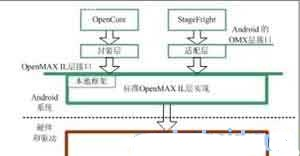

Android OpenMax多媒体引擎（一）
OpenMax是一个多媒体应用程序的框架标准。其中，OpenMax IL(集成层)技术规格定义了媒体组件接口，以便在嵌入式器件的流媒体框架中快速集成加速编解码器。
在Android中，OpenMax IL层，通常可以用于多媒体引擎的插件，Android的多媒体引擎OpenCore和StageFright都可以使用OpenMax作为插件，主要用于编解码(Codec)处理。
在Android的框架层，也定义了由Android封装的OpenMax接口，和标准的接口概念基本相同，但是使用C++类型的接口，并且使用了Android的Binder IPC机制。Android封装OpenMax的接口被StageFright使用，OpenCore没有使用这个接口，而是使用其他形式对OpenMax IL层接口进行封装。
OpenMax系统的结构
1.OpenMax总体层次结构
OpenMax是一个多媒体应用程序的框架标准，由NVIDIA公司和Khronos在2006年推出。
OpenMax是无授权费的，跨平台的应用程序接口API，通过使媒体加速组件能够在开发、集成和编程环节中实现跨多操作系统和处理器硬件平台，提供全面的流媒体编解码器和应用程序便携化。
OpenMax实际上分成三个层次，自上而下分别是，OpenMax DL(开发层)，OpenMax IL(集成层)和OpenMax AL(应用层)。三个层次的内容分别如下所示。
第一层：OpenMax DL(Development Layer，开发层)
OpenMax DL定义了一个API，它是音频、视频和图像功能的集合。硅供应商能够在一个新的处理器上实现并优化，然后编解码供应商使用它来编写更广泛的编解码器功能。它包括音频信号的处理功能，如FFT和filter，图像原始处理，如颜色空间转换、视频原始处理，以实现例如MPEG-4、H.264、MP3、AAC和JPEG等编解码器的优化。
第二层：OpenMax IL(Integration Layer，集成层)
OpenMax IL作为音频、视频和图像编解码器能与多媒体编解码器交互，并以统一的行为支持组件(例如，资源和皮肤)。这些编解码器或许是软硬件的混合体，对用户是透明的底层接口应用于嵌入式、移动设备。它提供了应用程序和媒体框架，透明的。S编解码器供应商必须写私有的或者封闭的接口，集成进移动设备。IL的主要目的是使用特征集合为编解码器提供一个系统抽象，为解决多个不同媒体系统之间轻便性的问题。
第三层：OpenMax AL(Appliction Layer，应用层)
OpenMax AL API在应用程序和多媒体中间件之间提供了一个标准化接口，多媒体中间件提供服务以实现被期待的API功能。
OpenMax API将会与处理器一同提供，以使库和编解码器开发者能够高速有效地利用新器件的完整加速潜能，无须担心其底层的硬件结构。该标准是针对嵌入式设备和移动设备的多媒体软件架构。在架构底层上为多媒体的编解码和数据处理定义了一套统一的编程接口，对多媒体数据的处理功能进行系统级抽象，为用户屏蔽了底层的细节。因此，多媒体应用程序和多媒体框架通过OpenMax IL可以以一种统一的方式来使用编解码和其他多媒体数据处理功能，具有了跨越软硬件平台的移植性。
提示：在实际的应用中，OpenMax的三个层次中使用较多的是OpenMax IL集成层，由于操作系统到硬件的差异和多媒体应用的差异，OpenMax的DL和AL层使用相对较少。
OpenMax IL层的结构
OpenMax IL目前已经成为了事实上的多媒体框架标准。嵌入式处理器或者多媒体 编解码模块的硬件生产者，通常提供标准的OpenMax IL层的软件接口，这样软件的开发者就可以基于这个层次的标准化接口进行多媒体程序的开发。
OpenMax IL的接口层次结构适中，既不是硬件编解码的接口，也不是应用程序层的接口，因此比较容易实现标准化。
